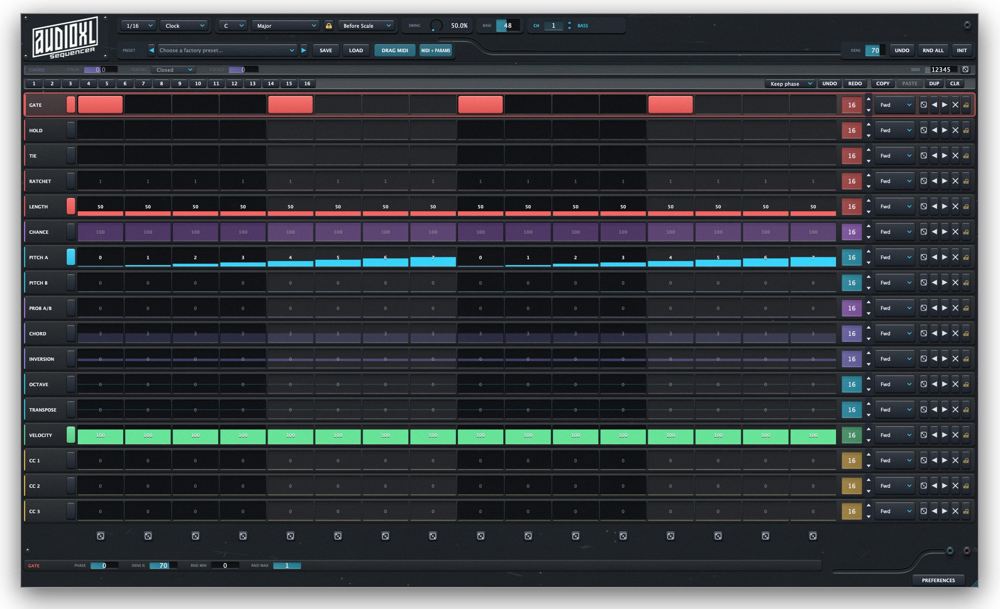
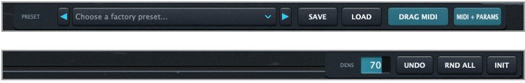

The Generative MIDI Sequencer
A generative MIDI sequencer for your DAW. It makes no sound — it drives your instruments.
Gate, pitch, length, velocity, chord… every aspect of a note lives on its own row, with its own length and direction.
One per channel: own patterns, harmony and clock. All play together.
Patterns built as the scenes of a performance.
25 genres, four-part arrangements.
Pitches are degrees: always in key.
Patterns that repeat without ever repeating the same way.
Scale degrees in, MIDI notes out.
On channels 1-4 it doesn’t roll dice: it writes a part by role — bass, lead, pad, chords — with the right gate, register and chord. From channel 5 up: pure randomness.
Cmd/Ctrl + click pins a step: randomise, reset and writing leave it alone. Pin the downbeat, re-roll the rest.
RND MIN/MAX set what’s possible. RND OFFSET sets what’s likely: a filter high 71 % of the time — that still drops.
One lane, all its steps.
One step, every lane.
Same seed, same sequence.
From house to chiptune. Load one, get a band.
original genres
genres added later
Plus a USER folder for yours — save and load as .json.

Swap scenes without the groove stumbling.
Scenes play in sequence on their own: 1 … 16 patterns, 1 … 8 bars each. Driven by the host’s bar — loops never throw it out of sync.
16 notes from C-2 recall the scenes on all 16 pages at once — and never reach the instrument.
Drag onto a DAW track: notes plus the three CC lanes as a clip.
+ PARAMS adds a CC automation curve for every active lane. Choose which in EXPORT.
MIDI MAP: MIDI Learn for the 11 header parameters, any controller, any channel.
STEP CTRL: 16 hardware buttons — built around the Arturia BeatStep Pro — toggle the steps of whichever lane is selected.
Swing travels on the AudioXL bus. AudioXL DRUMS in the same session can lock on and follow SEQ’s swing — no setup on this side.
A dedicated variant with silent audio and MIDI out, plus the “AudioXL SEQ Virtual” port for the 1-16 channel selector.
A MIDI FX before the instrument, in the same chain. Nothing to compensate.
A MIDI effect before the instrument.
Every event at the exact sample, at any buffer size. Optional look-ahead covers Live’s one-buffer MIDI routing delay.
1400×742 → 3840×2400, remembered with the session.
One serial, two computers. Full 10-minute demo, nothing you write is ever lost.